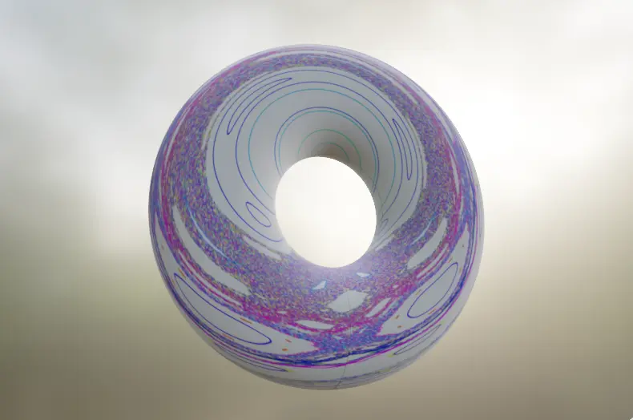

A few examples of my research
For non-profits, and academia
Many of the reports I've worked on are internal documents. Here are the ones which I can share publicly.
A proposal for measuring pain in shrimps
An investigation on using the Welfare Footprint's Cumulative Pain Framework for shrimps
Tell me more
A summary of Rethink Priorities' sentience research
Rethink Priorities
Tell me more
Summaries I have written for the Faunalytics library
Faunalytics curates a library of summaries of academic papers relevant to animal welfare
Tell me more

Physics research.
Classical-quantum localization in one-dimensional systems: The kicked rotor
A paper published in the American Institute of Physics with my supervisor, Prof. J. Pérez-Ríos.
Tell me more
Classical and quantum chaos through the kicked rotor
A blog post I wrote for my supervisor's website. An introduction to the topic of my masters thesis and the paper linked above.
Tell me more